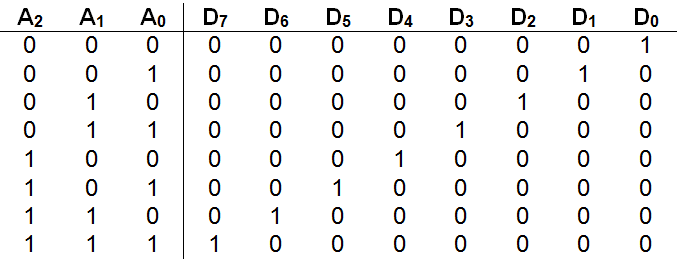
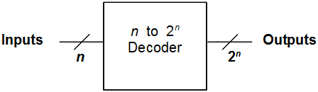
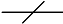
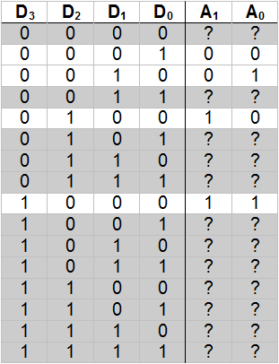
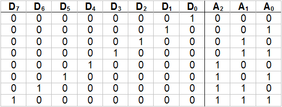
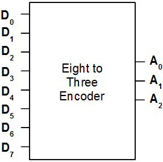
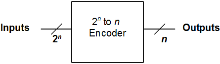

A decoder is a type of circuit that takes in a number (in unsigned binary form) and generates a “1” (high) on the output line that corresponds to the input number. All other output lines are set to “0” (low). For example, given an input of 00two , a “1” would be generated on output line zero. Likewise, given 01two as input, a “1” would be placed on output line one. Decoders, as we will see in , form an integral part of memory and register addressing circuitry.
Every decoder with n input lines will have exactly 2n output lines. So, a two-to-four decoder will have two input lines and four output lines, while a three-to-eight decoder will have three input lines and eight output lines. Both the input and output lines of decoders are numbered, with the n inputs ranging from 0 to n -1, and the 2n outputs ranging from 0 to 2n -1.
Here is the truth table for a three-to-eight decoder.
The inputs are labeled A0 to A2 and represent the bits of a three-bit unsigned binary number. The outputs are labeled D0 through D7 . As the table shows, an input number (such as 110two = six) results in the corresponding data line (D6 in this case) being set to “1”, with all other lines held at “0”.
illustrates an implementation of a three-to-eight decoder. The circuit diagram uses eight three-input and gates – one for each data line, together with a total of three not gates. If you don’t happen to have access to three-input type and gates, remember that they can easily be constructed from two standard two-input and gates.
Carefully tracing the lines in the circuit diagram, we see that all three of the inputs to the D0 and gate are negated. Thus, when inputs A2 , A1 , and A0 each have a value of “0”, D0 ’s three-input and gate receives three “1’s” ( not A2 , not A1 , and not A0 ) and generates a “1”. The result is that a “1” (high) is placed on output line zero when the number 000two is given as input to the circuit.
An implementation of a three-to-eight decoder
Moving on to the and gate for D1 , we note that two of the three inputs (A2 and A1 ) are negated, but the third input A0 is not. Thus, when inputs A2 and A1 are “0”, but A0 is “1” (corresponding to the input number 001two or one) the and gate will receive three “1’s” and generate a “1” on line D1 . Skipping ahead to the final case, we see that the three-input and gate for D7 receives all of its inputs directly from A2 , A1 , and A0 without negation. Thus, when A2 , A1 , and A0 each contain “1”(corresponding to the number 111two or seven) the gate will generate a “1” on data line D7 . The other cases are handled in a similar manner.
The three-to-eight decoder of may be encapsulated using a “black box” such as:

In general, since an n input decoder will always have 2 n outputs, its “black box” can be expressed in the following manner:
The symbol , along with a number or variable, is frequently used as a shorthand in circuit design to represent the indicated number of lines without actually drawing them. Since modern computers are based on 32-bit words, this compact representation is very important.
It is natural to wonder at this point if there is a circuit that does the exact opposite of a decoder. In other words, is there a circuit with 2n input lines, only one of which can be high at any point in time, that produces as output the n bit binary number corresponding to the raised input line? The answer is “yes”. Such a circuit is called an “encoder”.
A four-to-two encoder is defined by the following truth table.
Note that twelve of the sixteen rows of the truth table are “grayed out”. These rows represent input configurations that are disallowed because either no input line is high, or multiple input lines are high. Thus, in these cases, there is no single high input line for the circuit to return the corresponding binary number of.
How are we to deal with these “undefined” configurations when constructing the corresponding circuit? One way is to simply ignore the disallowed input configurations. This approach will work fine as long as we can be sure that the illegal states can never occur.
An implementation of an eight-to-three encoder
presents an implementation of an eight-to-three encoder that assumes disallowed states will never be encountered. The circuit works fine as long as we respect this limitation. For example, placing a “1” on line D6 , while holding all other lines low, causes the number 110two , or six, to be generated. An invalid configuration of inputs generates an erroneous output. For example, setting both D1 and D2 to“1” causes the circuit to output 011two , or three.
One “odd” feature of this circuit is that input line D0 is not connected to anything – it is, in a sense, ignored. Although this may seem strange at first, it is precisely what we want the circuit to do. Setting line D0 to “1” (and all other input lines to “0”) is supposed to cause all of the output lines to be set to “0”, so as to represent the number 000two , or zero.
The truth table for the eight-to-three encoder would be similar to the one shown above for the four-to-two encoder. However, in the case of the eight-to-three encoder, the full truth table would consist of 256 rows, since it has eight input lines and thus 28 , or 256, possible input configurations. All but eight of these input configurations would be disallowed. In order for the circuit’s truth table to fit on a page, only the “allowed” rows are presented below.
As you can see, this truth table is the exact inverse of the table for the three-to-eight decoder that was presented earlier.
The eight-to-three encoder can be encapsulated into a “black box” similar to the following:
In general, a 2n to n encoder can be drawn as:
Exercises for
-
Draw a complete implementation of a two-to-four decoder using only gates, connectors, and wires.
-
Draw a complete implementation of a four-to-two encoder using only gates, connectors, and wires. You may assume disallowed input configurations will never occur.